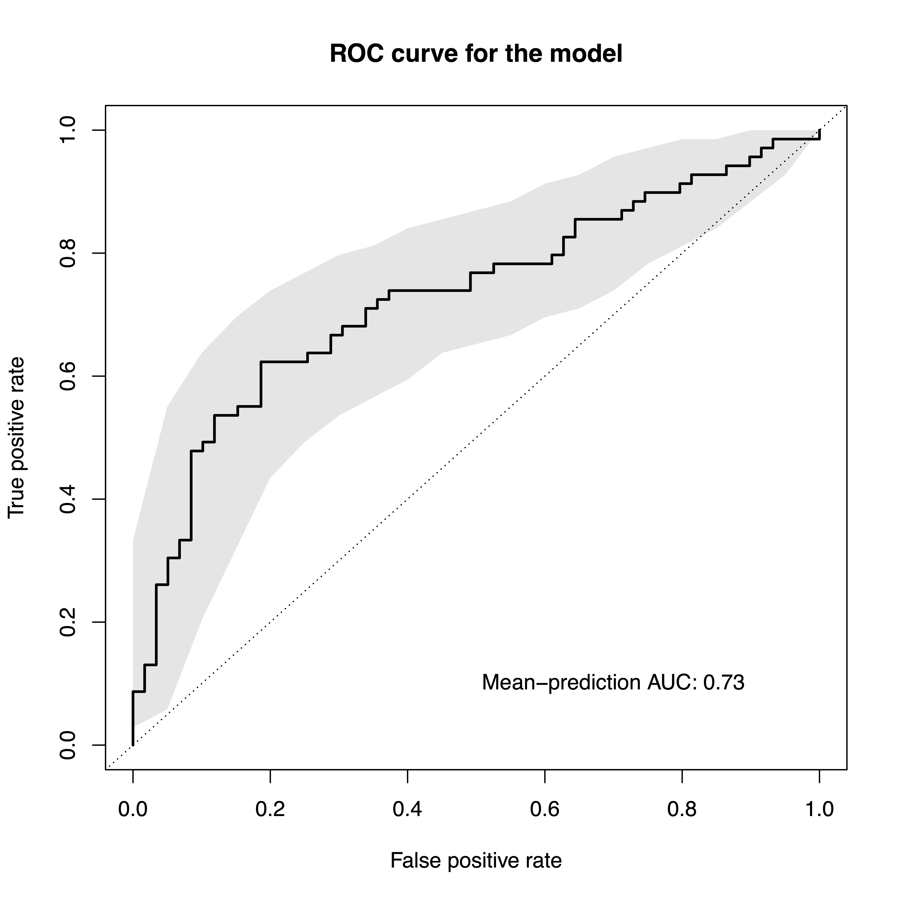
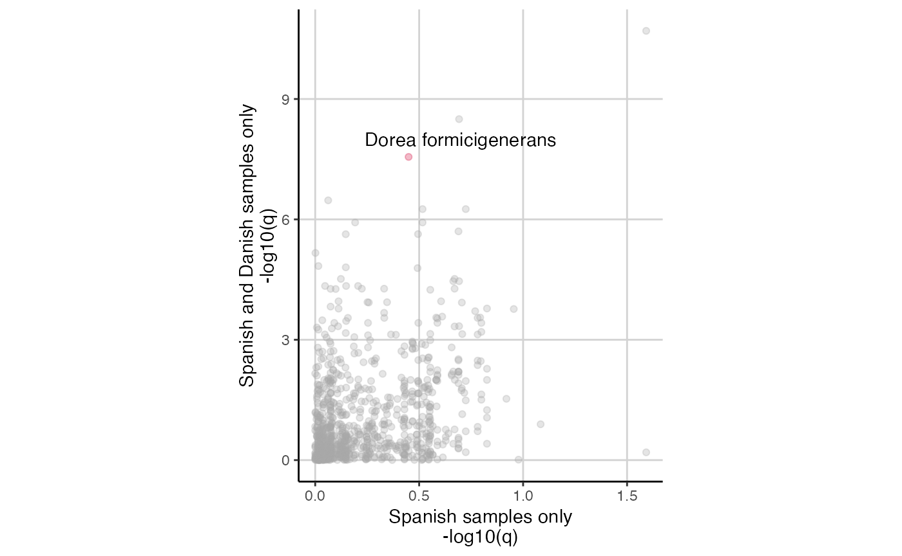
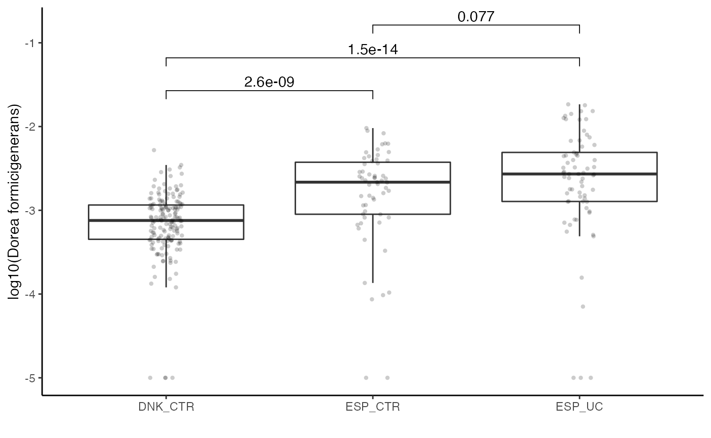
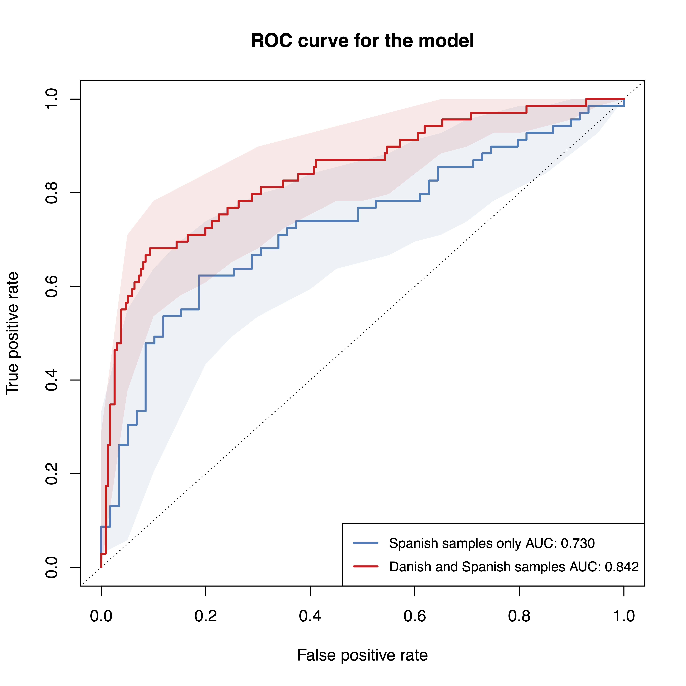

Example dataset with Confoundering
Jakob Wirbel and Georg Zeller
EMBL Heidelberggeorg.zeller@embl.de
Date last modified: 2020-11-11
SIAMCAT_confounder.RmdAbout This Vignette
Here, we demonstrate the standard workflow of the
SIAMCAT package using as an example the dataset from Nielsen et
al. Nat Biotechnol 2014. This dataset contains samples from
patients with inflammatory bowel disease and from controls.
More importantly, these samples have been collected in two different
countries, Spain and Denmark. Together with technical differences
between these samples, this introduces a potent confounding factor into
the data. Here we are going to explore how SIAMCAT would
identify the confounding factor and what the results would be if you
account for the confounder or not.
Setup
First, we load the packages needed to perform the analyses.
library("tidyverse")
library("SIAMCAT")
library("ggpubr")Preparations
There are two different ways to access the data for our example
dataset. On the one hand, it is available through the
curatedMetagenomicData R package. However, using it here
would create many more dependencies for the SIAMCAT
package.
Therefore, we here use data available through the EMBL cluster.
In the SIAMCAT paper, we performed the presented
analyses on the datasets available through
curatedMetagenomicData. If you want to reproduce the
analysis from the SIAMCAT paper, you can execute the code
chunks in the curatedMetageomicData section, otherwise
execute the code in the mOTUs2 section.
curatedMetagenomicsData
First, we load the package:
Metadata
The data are part of the combined_metadata
One thing we have to keep in mind are repeated samples per subject (see also the Machine learning pitfalls vignette).
Some subjects (but not all) had been sampled multiple times. Therefore, we want to remove repeated samplings for the same subject, since the samples would otherwise not be indepdenent from another.
The visit number is encoded in the sampleID. Therefore,
we can use this information to extract when the samples have been taken
and use only the first visit for each subject.
meta.nielsen <- meta.nielsen.full %>%
select(sampleID, subjectID, study_condition, disease_subtype,
disease, age, country, number_reads, median_read_length, BMI) %>%
mutate(visit=str_extract(sampleID, '_[0-9]+$')) %>%
mutate(visit=str_remove(visit, '_')) %>%
mutate(visit=as.numeric(visit)) %>%
mutate(visit=case_when(is.na(visit)~0, TRUE~visit)) %>%
group_by(subjectID) %>%
filter(visit==min(visit)) %>%
ungroup() %>%
mutate(Sample_ID=sampleID) %>%
mutate(Group=case_when(disease=='healthy'~'CTR',
TRUE~disease_subtype))Now, we can restrict our metadata to samples with UC and
healthy control samples:
As a last step, we can adjust the column names for the metadata so
that they agree with the data available from the EMBL cluster. Also, we
add rownames to the dataframe since SIAMCAT needs rownames
to match samples across metadata and features.
meta.nielsen <- meta.nielsen %>%
mutate(Country=country)
meta.nielsen <- as.data.frame(meta.nielsen)
rownames(meta.nielsen) <- meta.nielsen$sampleIDTaxonomic Profiles
We can load the taxonomic profiles generated with MetaPhlAn2 via the curatedMetagenomicsData R package.
x <- 'NielsenHB_2014.metaphlan_bugs_list.stool'
feat <- curatedMetagenomicData(x=x, dryrun=FALSE)
feat <- feat[[x]]@assayData$exprsThe MetaPhlAn2 profiles contain information on different taxonomic levels. Therefore, we want to restrict them to species-level profiles. In a second step, we convert them into relative abundances (summing up to 1) instead of using the percentages (summing up to 100) that MetaPhlAn2 outputs.
feat <- feat[grep(x=rownames(feat), pattern='s__'),]
feat <- feat[grep(x=rownames(feat),pattern='t__', invert = TRUE),]
feat <- t(t(feat)/100)The feature names are very long and may be a bit un-wieldy for plotting later on, so we shorten them to only the species name:
rownames(feat) <- str_extract(rownames(feat), 's__.*$')mOTUs2 Profiles
Both metadata and features are available through the EMBL cluster:
# base url for data download
data.loc <- 'https://zenodo.org/api/files/d81e429c-870f-44e0-a44a-2a4aa541b6c1/'
## metadata
meta.nielsen <- read_tsv(paste0(data.loc, 'meta_Nielsen.tsv'))
## Rows: 396 Columns: 9
## ── Column specification ────────────────────────────────────────────────────────
## Delimiter: "\t"
## chr (5): Sample_ID, Individual_ID, Country, Gender, Group
## dbl (4): Sampling_day, Age, BMI, Library_Size
##
## ℹ Use `spec()` to retrieve the full column specification for this data.
## ℹ Specify the column types or set `show_col_types = FALSE` to quiet this message.
# also here, we have to remove repeated samplings and CD samples
meta.nielsen <- meta.nielsen %>%
filter(Group %in% c('CTR', 'UC')) %>%
group_by(Individual_ID) %>%
filter(Sampling_day==min(Sampling_day)) %>%
ungroup() %>%
as.data.frame()
rownames(meta.nielsen) <- meta.nielsen$Sample_ID
## features
feat <- read.table(paste0(data.loc, 'metaHIT_motus.tsv'),
stringsAsFactors = FALSE, sep='\t',
check.names = FALSE, quote = '', comment.char = '')
feat <- feat[,colSums(feat) > 0]
feat <- prop.table(as.matrix(feat), 2)SIAMCAT Workflow (without Confounders)
The SIAMCAT Object
Now, we have everything ready to create a SIAMCAT object
which stores the feature matrix, the meta-variables, and the label.
Here, the label is created using the information in the metadata.
To demonstrate the normal SIAMCAT workflow, we remove the
confounding factor by only looking at samples from Spain. Below, we have
a look what would have happened if we had not removed them.
# remove Danish samples
meta.nielsen.esp <- meta.nielsen[meta.nielsen$Country == 'ESP',]
sc.obj <- siamcat(feat=feat, meta=meta.nielsen.esp, label='Group', case='UC')
## + starting create.label
## Label used as case:
## UC
## Label used as control:
## CTR
## + finished create.label.from.metadata in 0.012 s
## + starting validate.data
## +++ checking overlap between labels and features
## + Keeping labels of 128 sample(s).
## +++ checking sample number per class
## +++ checking overlap between samples and metadata
## + finished validate.data in 0.268 sFiltering
Now, we can filter feature with low overall abundance and prevalence.
sc.obj <- filter.features(sc.obj, cutoff=1e-04,
filter.method = 'abundance')
## Features successfully filtered
sc.obj <- filter.features(sc.obj, cutoff=0.05,
filter.method='prevalence',
feature.type = 'filtered')
## Features successfully filteredAssociation Plot
The check.assocation function calculates the
significance of enrichment and metrics of association (such as
generalized fold change and single-feature AUROC).
sc.obj <- check.associations(sc.obj, log.n0 = 1e-06, alpha=0.1)
association.plot(sc.obj, fn.plot = './association_plot_nielsen.pdf',
panels = c('fc'))
Confounder Analysis
We can also check the supplied meta-variables for potential confounding.
check.confounders(sc.obj, fn.plot = './confounders_nielsen.pdf')
## ++ remove metadata variables, since all subjects have the same value
## Country
## Finished checking metadata for confounders, results plotted to: ./confounders_nielsen.pdf
The function produces one plot for each meta-variable. Here, we show only the example of the body mass index (BMI). The BMI distributions look very similar for both controls and UC cases, so it is unlikely that the BMI would confound the analyses.
Machine Learning Workflow
The machine learning workflow can be easily implemented in
SIAMCAT. It contains the following steps:
- Feature normalization
- Data splitting for cross-validation
- Model training
- Making model predictions (on left-out data)
- Evaluating model predictions (using AUROC and AUPRC)
sc.obj <- normalize.features(sc.obj, norm.method = 'log.std',
norm.param = list(log.n0=1e-06, sd.min.q=0))
## Features normalized successfully.
sc.obj <- create.data.split(sc.obj, num.folds = 5, num.resample = 5)
## Features splitted for cross-validation successfully.
sc.obj <- train.model(sc.obj, method='lasso')
## Trained lasso models successfully.
sc.obj <- make.predictions(sc.obj)
## Made predictions successfully.
sc.obj <- evaluate.predictions(sc.obj)
## Evaluated predictions successfully.Model Evaluation Plot
The model evaluation plot will produce one plot with the ROC curve and another one with the precision-recall curve (not shown here).
model.evaluation.plot(sc.obj, fn.plot = './eval_plot_nielsen.pdf')
## Plotted evaluation of predictions successfully to: ./eval_plot_nielsen.pdf
Model Interpretation Plot
The model interpretation plot can give you additional information about the trained machine learning model. It will show you:
- the feature importance as barplot,
- the feature robustness (in how many of the models in the repeated cross-validation this feature has been selected into the model),
- the normalized feature abundances across samples as heatmap,
- the optional metadata as heatmap below, and
- a boxplot showing the proportion of the model weight that is
explained by
the selected features.
model.interpretation.plot(sc.obj, consens.thres = 0.8,
fn.plot = './interpret_nielsen.pdf')
## Successfully plotted model interpretation plot to: ./interpret_nielsen.pdf
Confounder Analysis
As already mentioned above, the Nielsen dataset contains samples from
both Spain and Denmark. How would SIAMCAT have alerted us
to this?
table(meta.nielsen$Group, meta.nielsen$Country)
##
## DNK ESP
## CTR 177 59
## UC 0 69Country Confounder
First, we create a SIAMCAT object again, this time
including the Danish controls:
sc.obj.full <- siamcat(feat=feat, meta=meta.nielsen,
label='Group', case='UC')
## + starting create.label
## Label used as case:
## UC
## Label used as control:
## CTR
## + finished create.label.from.metadata in 0.001 s
## + starting validate.data
## +++ checking overlap between labels and features
## + Keeping labels of 291 sample(s).
## + Removed 14 samples from the label object...
## +++ checking sample number per class
## +++ checking overlap between samples and metadata
## + finished validate.data in 0.363 s
sc.obj.full <- filter.features(sc.obj.full, cutoff=1e-04,
filter.method = 'abundance')
## Features successfully filtered
sc.obj.full <- filter.features(sc.obj.full, cutoff=0.05,
filter.method='prevalence',
feature.type = 'filtered')
## Features successfully filteredThe confounder plot would show us that the meta-variable “country” might be problematic:
check.confounders(sc.obj.full, fn.plot = './confounders_dnk.pdf')
Association Testing
First, we can use SIAMCAT to test for associations
including the Danish samples.
sc.obj.full <- check.associations(sc.obj.full, log.n0 = 1e-06, alpha=0.1) Confounders can lead to biases in association testing. After using
SIAMCAT to test for associations in both datasets (one time
including the Danish samples, the other time restricted to samples from
Spain only), we can extract the association metrics from both
SIAMCAT objects and compare them in a scatter plot.
assoc.sp <- associations(sc.obj)
assoc.sp$species <- rownames(assoc.sp)
assoc.sp_dnk <- associations(sc.obj.full)
assoc.sp_dnk$species <- rownames(assoc.sp_dnk)
df.plot <- full_join(assoc.sp, assoc.sp_dnk, by='species')
df.plot %>%
mutate(highlight=str_detect(species, 'formicigenerans')) %>%
ggplot(aes(x=-log10(p.adj.x), y=-log10(p.adj.y), col=highlight)) +
geom_point(alpha=0.3) +
xlab('Spanish samples only\n-log10(q)') +
ylab('Spanish and Danish samples only\n-log10(q)') +
theme_classic() +
theme(panel.grid.major = element_line(colour='lightgrey'),
aspect.ratio = 1.3) +
scale_colour_manual(values=c('darkgrey', '#D41645'), guide='none') +
annotate('text', x=0.7, y=8, label='Dorea formicigenerans')
This result shows that several species are only signficant if the Danish control samples are included, but not when considering only the Spanish samples.
As an example, we highlighted the species “Dorea formicigenerans” in the plot above. The test is not significant in the Spanish cohort, but is highly significant when the Danish samples are included.
# extract information out of the siamcat object
feat.dnk <- get.filt_feat.matrix(sc.obj.full)
label.dnk <- label(sc.obj.full)$label
country <- meta(sc.obj.full)$Country
names(country) <- rownames(meta(sc.obj.full))
df.plot <- tibble(dorea=log10(feat.dnk[
str_detect(rownames(feat.dnk),'formicigenerans'),
names(label.dnk)] + 1e-05),
label=label.dnk, country=country) %>%
mutate(label=case_when(label=='-1'~'CTR', TRUE~"UC")) %>%
mutate(x_value=paste0(country, '_', label))
df.plot %>%
ggplot(aes(x=x_value, y=dorea)) +
geom_boxplot(outlier.shape = NA) +
geom_jitter(width = 0.08, stroke=0, alpha=0.2) +
theme_classic() +
xlab('') +
ylab("log10(Dorea formicigenerans)") +
stat_compare_means(comparisons = list(c('DNK_CTR', 'ESP_CTR'),
c('DNK_CTR', 'ESP_UC'),
c('ESP_CTR', 'ESP_UC')))
Machine Learning
The results from the machine learning workflows can also be biased by the differences between countries, leading to exaggerated performance estimates.
sc.obj.full <- normalize.features(sc.obj.full, norm.method = 'log.std',
norm.param = list(log.n0=1e-06, sd.min.q=0))
## Features normalized successfully.
sc.obj.full <- create.data.split(sc.obj.full, num.folds = 5, num.resample = 5)
## Features splitted for cross-validation successfully.
sc.obj.full <- train.model(sc.obj.full, method='lasso')
## Trained lasso models successfully.
sc.obj.full <- make.predictions(sc.obj.full)
## Made predictions successfully.
sc.obj.full <- evaluate.predictions(sc.obj.full)
## Evaluated predictions successfully.When we compare the performance of the two different models, the model with the Danish and Spanish samples included seems to perform better (higher AUROC value). However, the previous analysis suggests that this performance estimate is biased and exaggerated because differences between Spanish and Danish samples can be very large.
model.evaluation.plot("Spanish samples only"=sc.obj,
"Danish and Spanish samples"=sc.obj.full,
fn.plot = './eval_plot_dnk.pdf')
## Plotted evaluation of predictions successfully to: ./eval_plot_dnk.pdf
To demonstrate how machine learning models can exploit this confounding factor, we can train a model to distinguish between Spanish and Danish control samples. As you can see, the model can distinguish between the two countries with almost perfect accuracy.
meta.nielsen.country <- meta.nielsen[meta.nielsen$Group=='CTR',]
sc.obj.country <- siamcat(feat=feat, meta=meta.nielsen.country,
label='Country', case='ESP')
sc.obj.country <- filter.features(sc.obj.country, cutoff=1e-04,
filter.method = 'abundance')
sc.obj.country <- filter.features(sc.obj.country, cutoff=0.05,
filter.method='prevalence',
feature.type = 'filtered')
sc.obj.country <- normalize.features(sc.obj.country, norm.method = 'log.std',
norm.param = list(log.n0=1e-06,
sd.min.q=0))
sc.obj.country <- create.data.split(sc.obj.country,
num.folds = 5, num.resample = 5)
sc.obj.country <- train.model(sc.obj.country, method='lasso')
sc.obj.country <- make.predictions(sc.obj.country)
sc.obj.country <- evaluate.predictions(sc.obj.country)
print(eval_data(sc.obj.country)$auroc)
## Area under the curve: 0.9701Session Info
sessionInfo()
## R version 4.2.2 (2022-10-31)
## Platform: x86_64-apple-darwin17.0 (64-bit)
## Running under: macOS Big Sur ... 10.16
##
## Matrix products: default
## BLAS: /Library/Frameworks/R.framework/Versions/4.2/Resources/lib/libRblas.0.dylib
## LAPACK: /Library/Frameworks/R.framework/Versions/4.2/Resources/lib/libRlapack.dylib
##
## locale:
## [1] en_US.UTF-8/en_US.UTF-8/en_US.UTF-8/C/en_US.UTF-8/en_US.UTF-8
##
## attached base packages:
## [1] stats graphics grDevices utils datasets methods base
##
## other attached packages:
## [1] ggpubr_0.6.0 SIAMCAT_2.3.3 phyloseq_1.42.0 mlr3_0.14.1
## [5] lubridate_1.9.2 forcats_1.0.0 stringr_1.5.0 dplyr_1.1.0
## [9] purrr_1.0.1 readr_2.1.4 tidyr_1.3.0 tibble_3.2.0
## [13] ggplot2_3.4.1 tidyverse_2.0.0 BiocStyle_2.26.0
##
## loaded via a namespace (and not attached):
## [1] uuid_1.1-0 backports_1.4.1 corrplot_0.92
## [4] systemfonts_1.0.4 plyr_1.8.8 igraph_1.4.1
## [7] splines_4.2.2 listenv_0.9.0 GenomeInfoDb_1.34.9
## [10] gridBase_0.4-7 digest_0.6.31 foreach_1.5.2
## [13] htmltools_0.5.4 lmerTest_3.1-3 fansi_1.0.4
## [16] magrittr_2.0.3 checkmate_2.1.0 memoise_2.0.1
## [19] cluster_2.1.4 tzdb_0.3.0 globals_0.16.2
## [22] Biostrings_2.66.0 mlr3tuning_0.18.0 matrixStats_0.63.0
## [25] vroom_1.6.1 timechange_0.2.0 pkgdown_2.0.7
## [28] prettyunits_1.1.1 colorspace_2.1-0 textshaping_0.3.6
## [31] xfun_0.37 crayon_1.5.2 RCurl_1.98-1.10
## [34] jsonlite_1.8.4 lme4_1.1-32 survival_3.5-5
## [37] iterators_1.0.14 ape_5.7-1 glue_1.6.2
## [40] gtable_0.3.1 zlibbioc_1.44.0 XVector_0.38.0
## [43] car_3.1-1 Rhdf5lib_1.20.0 shape_1.4.6
## [46] BiocGenerics_0.44.0 abind_1.4-5 scales_1.2.1
## [49] infotheo_1.2.0.1 DBI_1.1.3 rstatix_0.7.2
## [52] Rcpp_1.0.10 progress_1.2.2 palmerpenguins_0.1.1
## [55] bit_4.0.5 stats4_4.2.2 glmnet_4.1-6
## [58] RColorBrewer_1.1-3 ellipsis_0.3.2 farver_2.1.1
## [61] pkgconfig_2.0.3 sass_0.4.5 utf8_1.2.3
## [64] labeling_0.4.2 tidyselect_1.2.0 rlang_1.1.0
## [67] reshape2_1.4.4 PRROC_1.3.1 munsell_0.5.0
## [70] tools_4.2.2 cachem_1.0.7 cli_3.6.0
## [73] generics_0.1.3 ade4_1.7-22 broom_1.0.4
## [76] evaluate_0.20 biomformat_1.26.0 fastmap_1.1.1
## [79] yaml_2.3.7 ragg_1.2.5 bit64_4.0.5
## [82] knitr_1.42 fs_1.6.1 lgr_0.4.4
## [85] beanplot_1.3.1 bbotk_0.7.2 future_1.32.0
## [88] nlme_3.1-162 paradox_0.11.0 compiler_4.2.2
## [91] rstudioapi_0.14 curl_5.0.0 ggsignif_0.6.4
## [94] bslib_0.4.2 stringi_1.7.12 highr_0.10
## [97] desc_1.4.2 lattice_0.20-45 Matrix_1.5-3
## [100] nloptr_2.0.3 vegan_2.6-4 permute_0.9-7
## [103] multtest_2.54.0 vctrs_0.5.2 pillar_1.8.1
## [106] lifecycle_1.0.3 rhdf5filters_1.10.0 BiocManager_1.30.20
## [109] jquerylib_0.1.4 LiblineaR_2.10-22 data.table_1.14.8
## [112] bitops_1.0-7 R6_2.5.1 bookdown_0.33
## [115] gridExtra_2.3 mlr3misc_0.11.0 IRanges_2.32.0
## [118] parallelly_1.34.0 codetools_0.2-19 boot_1.3-28.1
## [121] MASS_7.3-58.3 rhdf5_2.42.0 mlr3learners_0.5.6
## [124] rprojroot_2.0.3 withr_2.5.0 S4Vectors_0.36.2
## [127] GenomeInfoDbData_1.2.9 mgcv_1.8-42 parallel_4.2.2
## [130] hms_1.1.2 grid_4.2.2 minqa_1.2.5
## [133] rmarkdown_2.20 carData_3.0-5 pROC_1.18.0
## [136] numDeriv_2016.8-1.1 Biobase_2.58.0